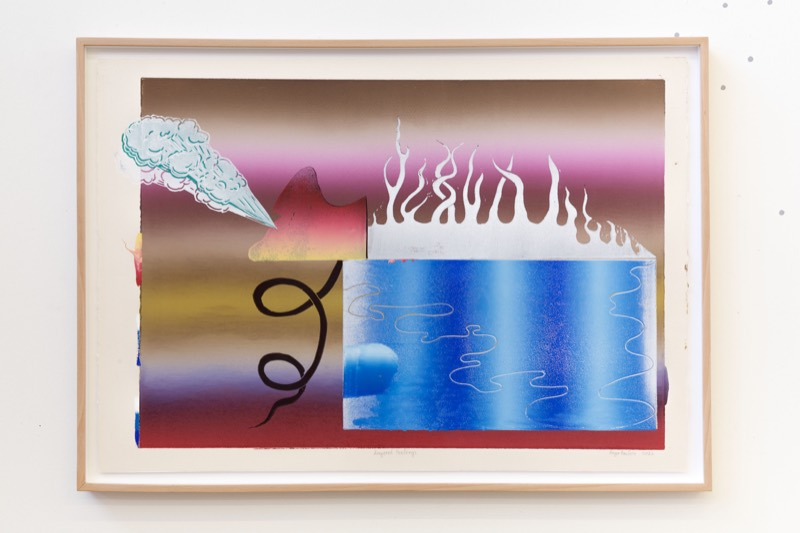
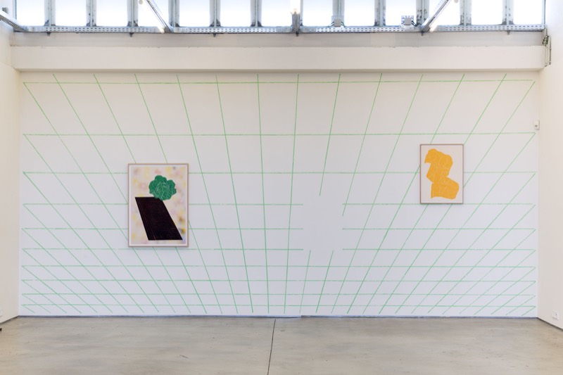
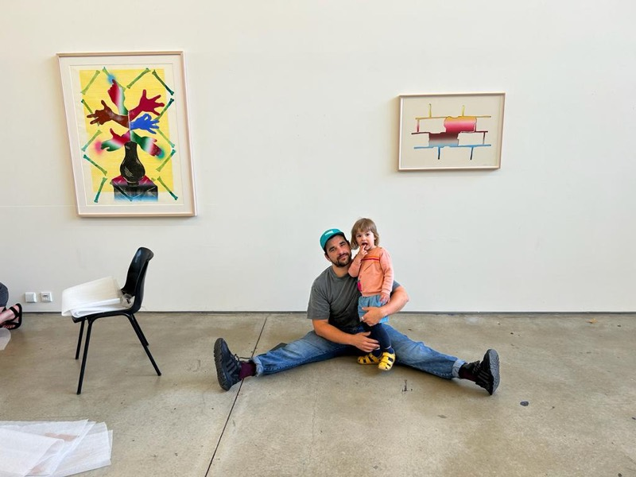
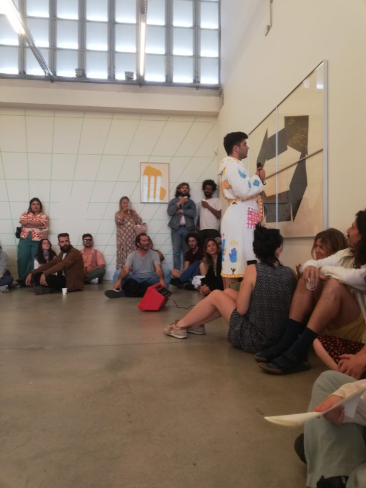
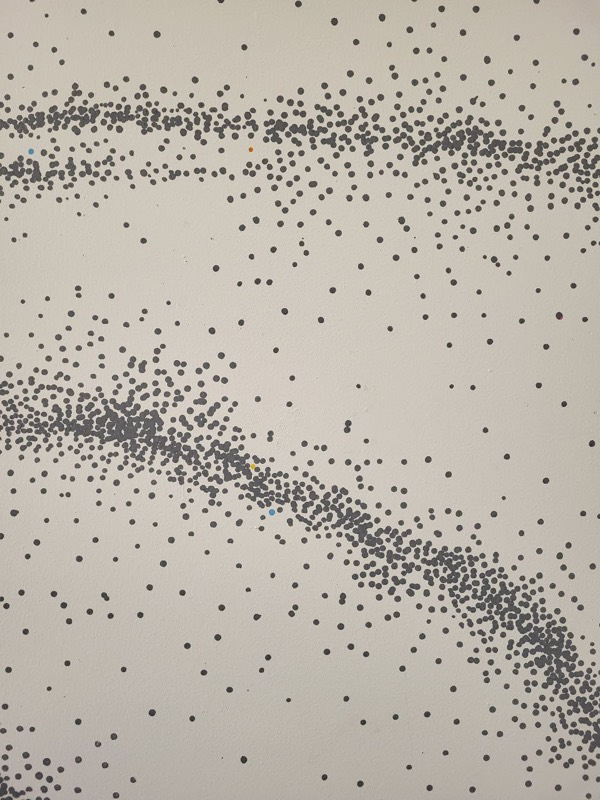
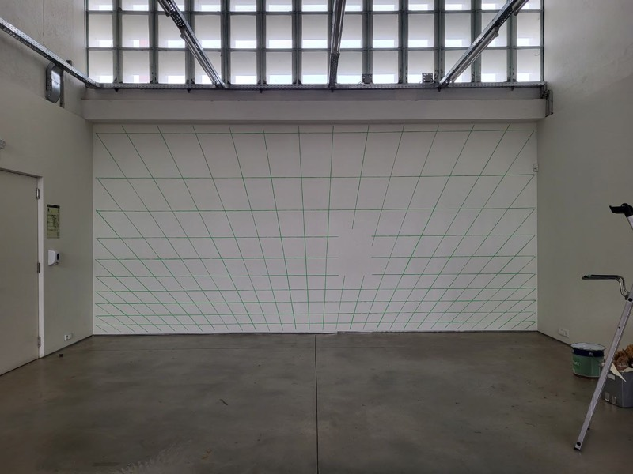
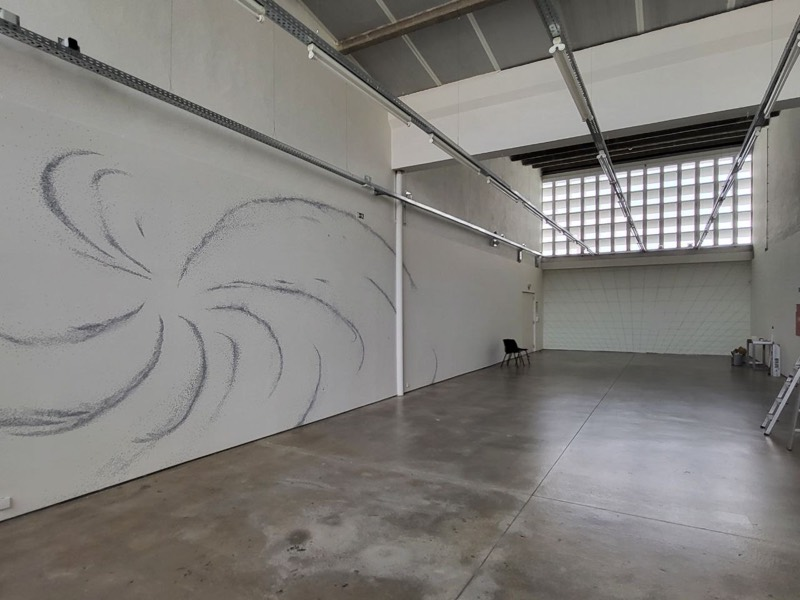

Solo exhibition
Cabbage and the Plan of Things

A Couve e o Plano das Coisas. A solo exhibition at Ar.Co, Antigo Mercado de Xabregas, Lisboa, curated by Miguel von Hafe Pérez, with the support of Fundação Ilídio Pinho. The same body of work was first shown at Burg Giebichenstein Halle in 2022.






